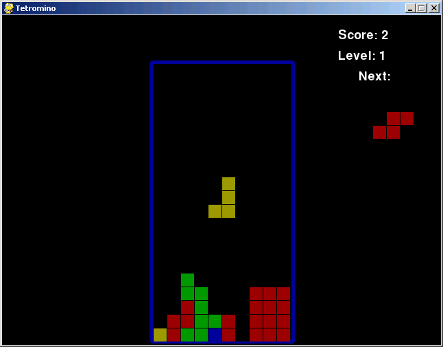
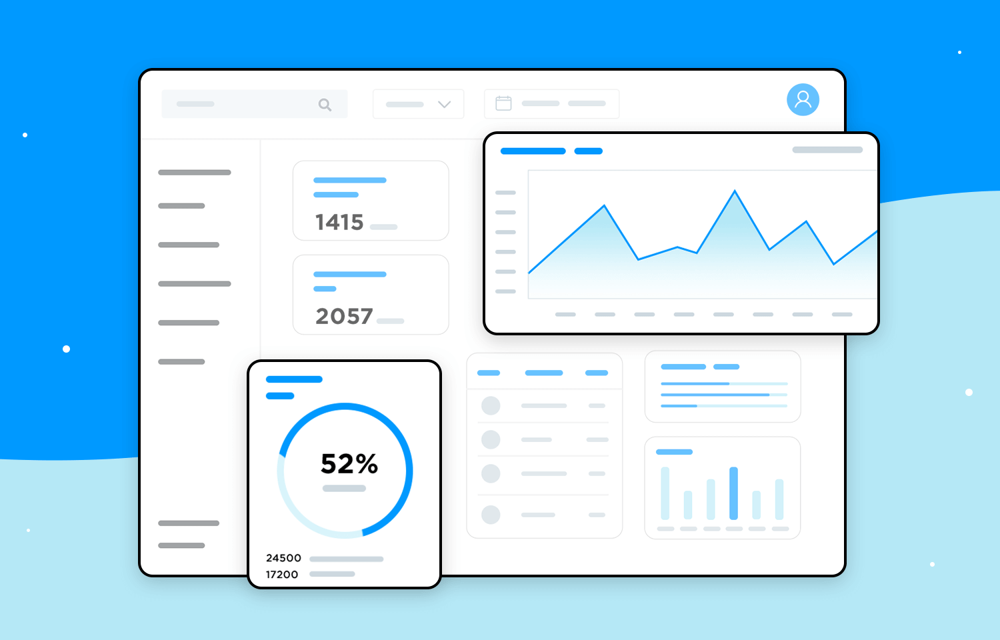
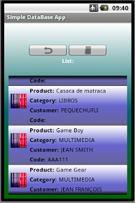

Pythonspel
Een quiz-app waarmee je je kennis kunt testen. Elke vraag wordt uit een vragenbestand geladen en na het afronden verschijnt je score op het scherm.
Mijn rol: zelfstandig gebouwd — de spel-logica en het bijhouden van de score.
Een selectie uit de dingen die ik zelf heb gebouwd tijdens mijn studie. Per project zie je welke technieken ik heb gebruikt en wat mijn eigen bijdrage was.

Een quiz-app waarmee je je kennis kunt testen. Elke vraag wordt uit een vragenbestand geladen en na het afronden verschijnt je score op het scherm.
Mijn rol: zelfstandig gebouwd — de spel-logica en het bijhouden van de score.

Een statische website die je cijfers en agenda in één overzicht toont, met een menu dat zich aanpast aan de breedte van je scherm.
Mijn rol: zelfstandig gebouwd — de layout, de interactie en het responsieve gedrag.

Een overzicht van boeken met een zoekfunctie. De gegevens staan in een database en worden opgehaald met queries in plaats van hardcoded in de pagina.
Mijn rol: zelfstandig gebouwd — het datamodel, de queries en de koppeling ernaartoe.